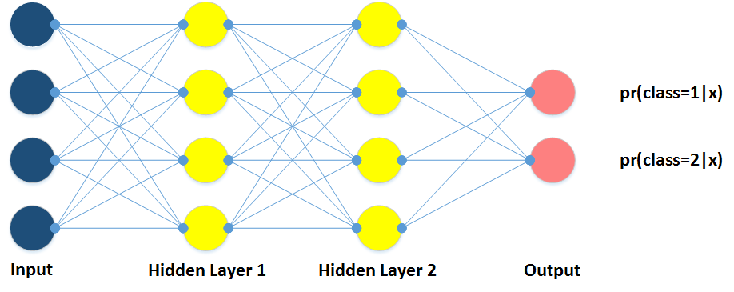

Introduction
There are many Neural Network libraries available on the internet today. For example, you're familiar with Python, you can take advantage of TensorFlow, sci-kit learn. Or Java, you can use DeepLearning4J. From my mentor's recommendation, I switch to Torch, a good and easy to know framework for working with Neural Network models. In this article, I will focus on how-to use Torch for beginner, by going through my Hello World program. In my opinion, learning from Hello World program is a good approach for getting started with new programming language. Besides that, as my knowledge, until the day this article goes online, this's the first article introduces about working with Torch in Microsoft Windows environment in an easy way.
Content
Prerequisites
In order to working with my example program, and also know what I'll present, you need have the following prerequisites:
- Microsoft Windows 10 (Version 1607), aka Windows 10 Anniversary Update
- Bash on Ubuntu on Windows is enabled [Readme]
- Torch is installed in virtual Ubuntu on Windows [Readme]
- Basic understanding of Lua programming language [Readme]
- Basic understanding of machine learning, artificial neural network [ML | ANN]
Neural Network with Torch
In Torch, the nn is the main package to build and train from simple to complex neural network model. To begin working with Torch, you need to define the following things:
- Model
- Training
- Data
- Evaluation
Model
The first thing in working with Torch is that you need to define a model. For example, you want a feed-forward network, a convolutional network, or a recurrent neural network. You also define the number of hidden layers, the number of hidden units for
each layer, and the activation function which you want to use on each layer.
The nn package defines the containers as follows:
nn.Sequential: plugs layers in a feed-forward fully connected mannernn.Parallel: plugs each element of input Tensor to different layersnn.Concat: concatenates in one layer several modules along dimensiondimnn.Bottle: allows any dimensionality input be forwarded through a module
nn.Sequential since it's the most easy approach to feed data to the network, thus the program will look like:
require "nn"
mlp = nn.Sequential()
Next, to tranform data between layers, we can simply use the linear transfer function (
nn.Linear) or the non-linear representation of input data (nn.Sigmoid, nn.Tanh,
nn.ReLU, ...). Let's assume that we want a network with two hidden layers, a 4-dimensional input, 4 units in each layer, and the transfer function is nn.Tanh.
input = 4
output = 2
hiddenLayer1 = 4
hiddenLayer2 = 4
mlp:add(nn.Linear(input, hiddenLayer1))
mlp:add(nn.Tanh())
mlp:add(nn.Linear(hiddenLayer1, hiddenLayer2))
mlp:add(nn.Tanh())
mlp:add(nn.Linear(hiddenLayer2, output))
mlp:add(nn.LogSoftMax())
The last two lines in above program declare the output layer. In this case, we define an output in 2-dimension, that means, our task is binary classificaton, and thus the nn.LogSoftMax() is the most common choice.We should print our model to check whether it fits our need, by insert the following line:
print(mlp)
Now, at this point of the program, you can compile and run it. To execute this program, first, you have to save this file with the file extension is .lua, for example, named sample.lua. Then, open
the Bash on Ubuntu on Windows, and type the command as follows (you can use the cd command to change to directory of your saved file).
th sample.lua
The program is executed, and print the following lines on the screen:
nn.Sequential {
[input -> (1) -> (2) -> (3) -> (4) -> output]
(1): nn.Linear(4 -> 4)
(2): nn.Tanh
(3): nn.Linear(4 -> 2)
(4): nn.LogSoftMax
}
To pre-test your model properly works and do what it's supposed to do, you can take the advantage of Module:forward.
preTest = mlp:forward(torch.randn(1,10))
print(preTest)
When execute the program, it will return a Tensor data of size 1 x 2, in which the preTest[1][i] is log probability belongs to class i of the input, respectively. Note that, in Lua,
the index of Tensor starts at 1. Below is the graphical representation of our NN model.
Training
In previous section, we had our NN model. Now, we have to define a training algorithm, as nn package provides us two approaches: (1) implement your own training algorithm, that means, you define from taking input, feeding to layers,
computing gradients, and update model's paremeters; or (2) you can take advantage of pre-implemented nn.StochasticGradient method. The nn.StochasticGradient takes the our defined model, and a loss function (Criterion).
There are many Criterion in nn package (e.g., CrossEntropyCriterion, MSECriterion, CosineEmbeddingCriterion), and we use the negative log-likelihood criterion, since
it usually goes with nn.LogSoftMax. Besides that, another important parameter for nn.StochasticGradient is learningRate.
criterion = nn.ClassNLLCriterion()
trainer = nn.StochasticGradient(mlp, criterion)
trainer.learningRate = 0.1
Data
Until now, the last important thing is training dataset. Let's assume our dataset is stored in CSV format. Since Torch doesn't support splitting method, we need to define such method as follows.
-- Split input string at comma symbols
function string:splitAtCommas()
local sep, output = ",", {}
local pattern = string.format("([^%s]+)", sep)
self:gsub(pattern, function(c) output[#output+1] = c end)
return output
end
-- Read the dataFile and return a variable in Tensor data structure
function loadData(dataFile)
local dataset = {}
local i = 1
for line in io.lines(dataFile) do
local values = line:splitAtCommas()
local y = torch.Tensor(1)
y[1] = values[#values] -- the last number in line is class
values[#values] = nil
local x = torch.Tensor(values) -- all other numbers are input
dataset[i] = {x, y}
i = i + 1
end
function dataset:size() return (i - 1) end -- the requirement mentioned
return dataset
end
Then, the method nn.StochasticGradient:train is called to begin training process.
---- Load the dataset
dataset = loadData("train.csv")
---- Training model with given dataset
trainer:train(dataset)
Evaluation
After successfully training our NN model, we now need to evaluate and compute the accuracy of our model. This step can be done by using the two functions below. The first one, named argmax(v), and the second is evluation(filePath),
which takes the test dataset (in CSV format) and returns the accuracy of the current model (in percentage).
---- argmax
function argmax(v)
local max = torch.max(v)
for i = 1, v:size(1) do
if v[i] == max then
return i
end
end
end
---- Evaluate and compute the accuracy
function evaluation(filePath)
local total = 0
local positive = 0
for line in io.lines(filePath) do
local values = line:splitAtCommas()
local y = torch.Tensor(1)
y[1] = values[#values]
values[#values] = nil
local x = torch.Tensor(values)
local prediction = argmax(mlp:forward(x))
if math.floor(prediction) == math.floor(y[1]) then
positive = positive + 1
end
total = total + 1
end
return (positive / total) * 100
end
---- Read the testset and compute the accuracy
accuracy = evaluation("test.csv")
print("Accuracy(%) is " .. accuracy)
If we want to view the weight matrices of our model, we can use the command below.
---- Print the weight matrix
print("Weights of saved model: ")
print(mlp:get(1)) -- Get the first module of our model, i.e. nn.Linear(4 -> 4)
print(mlp:get(1).weight) -- Get the weight matrix of that layer
In case we want to save the model and load it later, we can use the following lines of code.
---- Save the model to file
torch.save("file.th", mlp)
---- Load the saved model
mlp2 = torch.load("file.th")
print(mlp2:get(1).weight)
Contributors
- Phuc Duong - huuphucduong@gmail.com
- Duy Nguyen (Student) - nguyentuthanhduy@outlook.com
- Huy Nguyen (Student) - nguyenmanhhuy01@gmail.com
Contact
This tutorial may contain mistakes, thus I appreciate your feedback if you find some of them. Please feel free to send to me or one of my student an email!